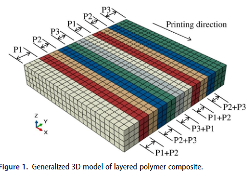
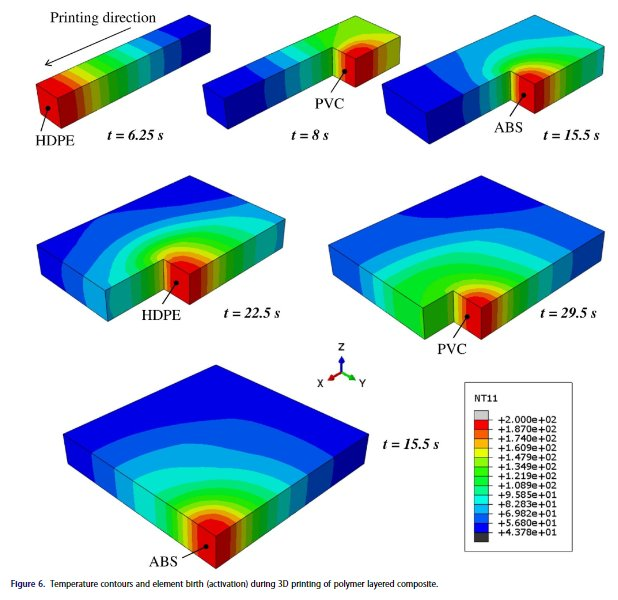
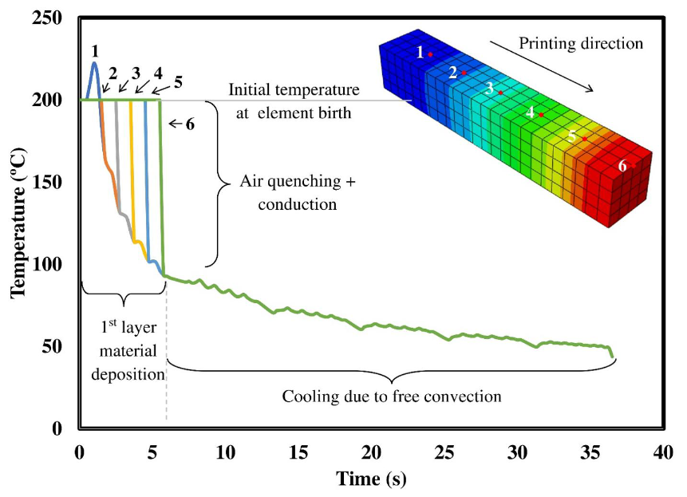
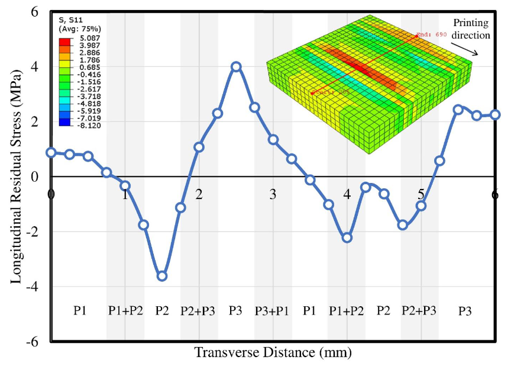
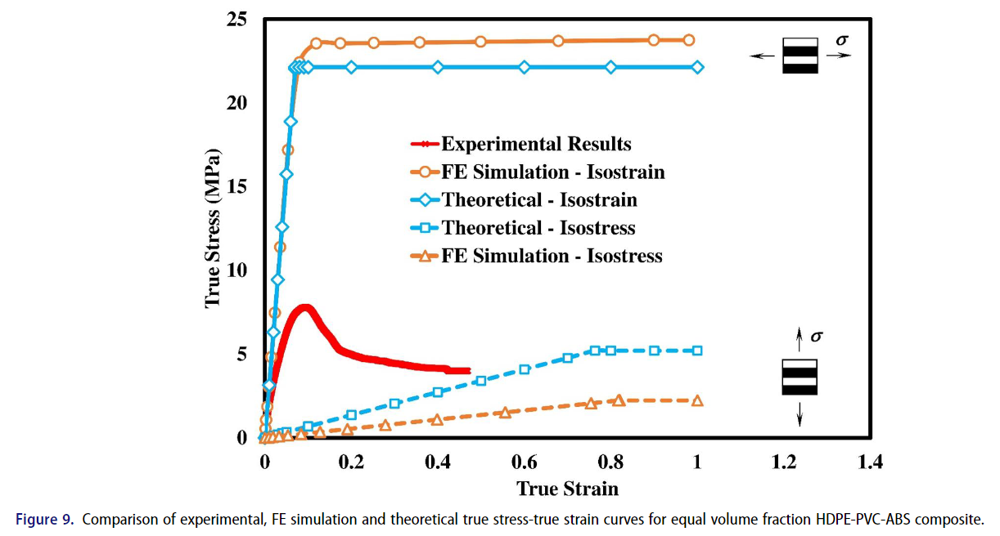

Thermo-Mechanical Analysis of Additive Manufacturing for Layered Polymer Composites
- Journal
- Mechanics of Advanced Materials and Structures, 31(26)
- Year and pages
- 2024, 8180 to 8190
- Authorship
- First authorof ten
Summary
The paper builds a coupled thermal-mechanical finite element model of fused deposition modelling for an HDPE, PVC and ABS layered polymer composite, using a moving volumetric heat source with element activation to reproduce the layer-by-layer print. The temperature history is carried into a mechanical analysis loaded in isostress and isostrain directions to mimic a tensile test. Because the model carries the residual stresses left by printing, it tracks measured strength more closely than classical rule-of-mixtures bounds.
Key findings
- Deposition temperature is capped near 200 C, with the first printed layer briefly overshooting to about 220 C.
- Each new layer reheats the material beneath to roughly 100 C; that reheat and cool cycle is the main source of residual stress.
- Predicted longitudinal residual stress ranges from about -3.6 MPa to +4.0 MPa across the cross section.
- With residual stress included, the finite element strength bounds sit about 10 percent from the classical isostrain and isostress bounds.
- Measured tensile strength, about 8 MPa, falls below both bounds, attributed to interfacial discontinuities between printed layers.
Bashir, U., Hassan, A., Ahmed, F., Zain-ul-abdein, M., Mobeen, H., Dildar, A., Hayat, Q., Ijaz, H., Asad, M., and Djavanroodi, F. (2024).
The follow-on study carries this method from polymer to metal laser powder bed fusion.
Figures




